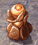
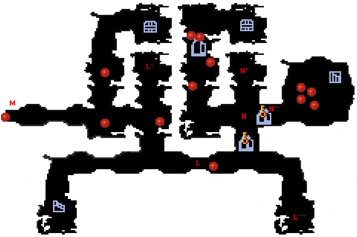

| 概要 | 情報 | アイテム一覧 |
| 敵キャラ一覧 | ステージ一覧 | 夢幻迷宮について |
| 攻略チャート | Zwei!! 攻略へ |
| ステージ選択へ |
クロップ洞窟 Lv.28
 |
|
| A | A地点はスタート地点です。 フロアに入った瞬間、敵に囲まれるので注意してください。 |
| B  |
B地点にあるろうそくに灯をともすと、B'地点の扉が開きます。 それと、火をつけた瞬間、敵が現れるので注意してください。 |
| C |
C地点の扉を開けるには、1地点の苗床にキノコを置きます。 また、2地点の苗床へキノコを置くと、宝箱と敵が現れます。 |
| D | D地点の敵を倒し、D'へ向かうと宝箱があります。 その宝箱を開くと、再びD地点に敵が現れます。 |
| E | 部屋Eには爆弾で壊せる岩がたくさんあります。 壊すと、宝箱が出てきたり、敵が現れたりします。 |
F |
F地点のボタンスイッチをONんにすると、F'地点の扉が開きます。 |
| G |
G地点にはろうそくが4本あります。 四つの中央に立ち、炎の魔法なので素早く火をつけましょう。 |
| H | H地点にはみのたんがいます。強いです。 |
| I | I地点のおにぐもに近づくと、敵に囲まれます。 注意してください。 |
J  |
J地点のキノコを、J'地点の苗床へ奥と、階段へ続く扉が開きます。 J地点のキノコへ触れると、J''地点に敵が現れます。 |
| K | 扉Kを通過すると、開かなくなります。 K'～K''''の風船を全て割ると、扉が開きます。ただし、K'の風船を割ると、敵が2匹出てくるので注意してください。 |
|  | |
| L |
L地点にはトゲがいっぱいあります。斜め移動で素早く動かないと、先へ進めません。 また、L'''もしくは、L'地点のボタンスイッチがONでないと、トゲが出たままになります。 |
| M | M地点へ移動すると、敵に囲まれるので注意してください。 |
| N |
N'地点にあるキノコを、Ｎ地点にある苗床へ移動させると、N''地点の扉が開きます。 磁石を使ってもいいのですが、キノコに触れるとN'地点に敵が現れるので、倒しておきましょう。 |
| ステージ選択へ |
| 概要 | 情報 | アイテム一覧 |
| 敵キャラ一覧 | ステージ一覧 | 夢幻迷宮について |
| 攻略チャート | Zwei!! 攻略へ |
Zwei!!
| 目次へ戻る | ページの上部へ |